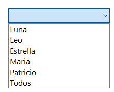
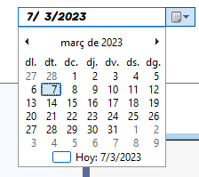
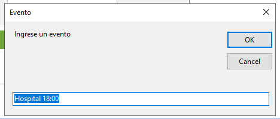
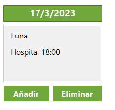

Para crear un evento, primero debes seleccionar el calendario de la mascota a la que deseas agregar el evento. Puedes seleccionar el nombre de la mascota o elegir "todos" para agregar el evento en general.
A continuación, debes seleccionar el día en el calendario en el que deseas agregar o visualizar eventos.
Luego, haz clic en el botón "Añadir" para agregar información importante, como la fecha y la descripción del evento.
Una vez guardado, podrás visualizar el evento en el calendario con la descripción, el nombre de la mascota y la fecha del evento. Si deseas eliminar el evento, solo tienes que hacer clic en el botón "Eliminar" y se eliminará todo el evento para ese día.
